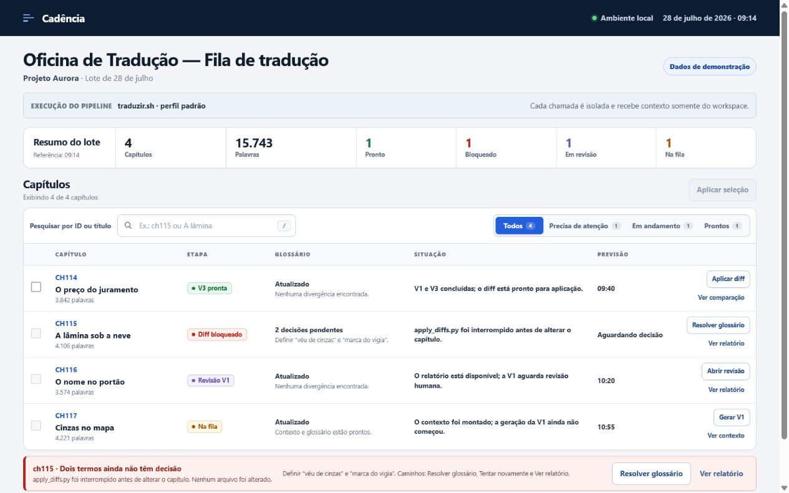
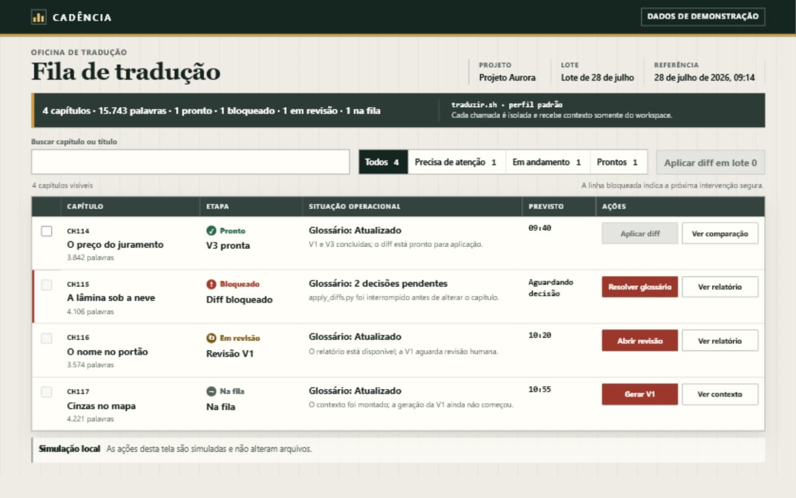

Neutral baseline
A conventional, functional implementation that does not draw on the skill.

Actual renderings in the same browser, with the same initial state, zoom, and 1280 × 800 viewport.
A conventional, functional implementation that does not draw on the skill.

Operational hierarchy, in-context details, and explicitly named actions.
